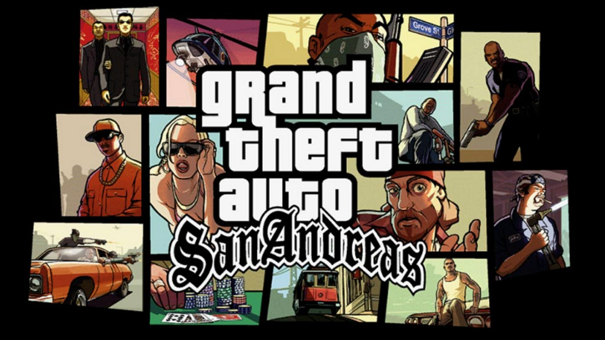
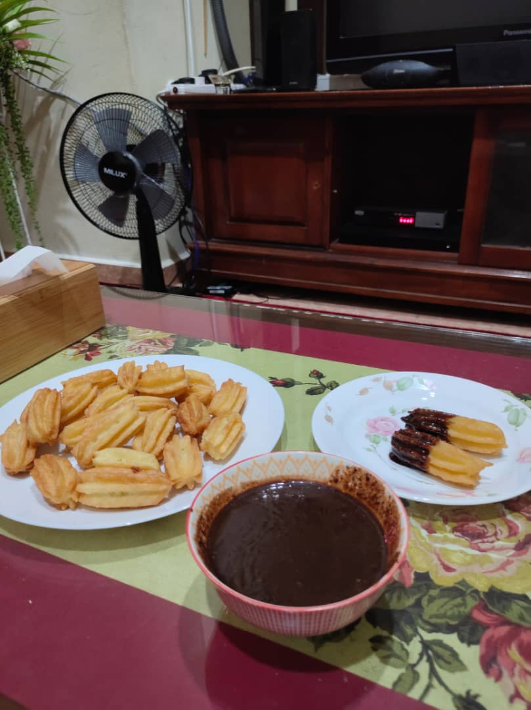

My Favourite Songs
Insomniacks
Insomniacks - Pulang (Lirik Video)Wany Hasrita
Wany Hasrita - Terlalu Memuja (Ost Drama Curi-Curi Cinta - Official Music Video)Judika
Judika - Tak Mungkin Bersama (Official Lyric Video)Mawar De Jongh
Mawar De Jongh - Lebih Dari Egoku | Official Music VideoLit Band
The Lit Band - Hasrat (Official Music Video with Lyric)Shiffah Harun
Shiffah Harun - Selalu Sabar (Versi asli dari Aqila Penantian)Mahen
Mahen - Pura Pura Lupa (Official Lyric Video)Andmesh
Andmesh - Kumau Dia (Official Music Video)Kucaimars
Kucaimars - Jawab (Lirik)List of Games I've Played
- CAFELAND
- NINJA SAGA
- DRAGON CITY
- GTA SAN ANDREAS
- CS GO
- CLASH OF CLAN
- MOBILE LEGENDS
- PUBG MOBILE
The first games I played on Facebook were Cafeland, Ninja Saga, and Dragon City. Cafeland is a game that can design your dream cafe,
bakery & restaurant, cook tasty food and be a star chef while Ninja Saga and Dragon City games are hosted by my brother and sister. Most of the games
I played were influenced by my boys sibling and most of the games I played were boy games because they taught me to play all of them.





Game Clash of Clan is also directed by fellow Ninja Saga games. At first it was difficult to understand the game because there were too
many steps to understand. Clash of Clan is known as COC is an online multiplayer game in which players form communities called clans, train troops, and
attack other players to earn resources. ...Gold and elixir can be used to build and upgrade defenses and traps that protect the player from other players'
attacks and to build and upgrade buildings.
The famous game later was Mobile Legends, ML was taught by my little brother. The first time I saw my little brother play this game,
I found this game to be boring but after playing ML for several times on my brother's phone, I became interested in playing and continued installing
on my phone.

The last game I'm playing right now is PUBG. PUBG is Gameplay. Battlegrounds is a player versus player shooter game in which up to one hundred
players fight in a battle royale, a type of large-scale last man standing deathmatch where players fight to remain the last alive. Players can choose to enter the
match solo, duo, or with a small team of up to four people. However, this PUBG needs a lot of space to install this game so I can play this game after buying a
new phone.
List of Popular ASMR
Korea
- Zach Choi ASMR Mukbang
- Hamzy ASMR Mukbang
- Sio ASMR Mukbang
- Donam ASMR Mukbang
Malaysia
- Isaac Osman Tv Mukbang
- Syedot ASMR Mukbang
- OOHAMI ASMR Mukbang
- Ariey Jojo
Indonesia
- Tanboy Kun
- Nex Carlos
- Ricarica96
- Hendri Turbo
The food I cooked
- Churros
- Kek Coklat
- Kek Batik
- Popia Carbonara
- Roti Jala
- Tart Nenas
- Nasi Kunyit
- Nasi Arab

Bahan
1 Cawan Tepung Gandum
1 Sudu besar Margerin
1 Sudu besar Gula
1 Cawan Air
1 Biji Telur
Secubit Garam
1 Sudu kecil Vanila
Minyak untuk menggoreng
Cara Memasak
-Masak air, margerin, gula, garam sehinga mendidih
-Masuk gandum dan kacau sebati. Selepas itu tutup api
-Apabila sudah suam, masukkan pula telur dan kacau sebati
-Bentuk churros tersebut dengan acuan yang telah ditetapkan
-Akhir sekali, goreng churros sehingga kuning keemasan didalam minyak yang panas

Bahan A
1 Cawan Koko
1 Cawan Susu pekat
1 Cawan Susu cair
1 Cawan Gula
Secubit Garam
1 Sudu kecil Vanila
Minyak untuk menggoreng
1 Cawan Marjerin
3 Biji telur
Bahan B
1 ¼ Cawan Gandum
1 Sudu Kecil Bikarbonat
1 Sudu Kecil Baking Powder
Bahan Topping
½ Cawan Susu pekat
½ Cawan Koko
¼ Cawan Susu Cair
2 Sudu besar butter
Cara Memasak
-Ayak kesemua bahan B
-Blend kesemua bahan A dan B yang telah di ayak tadi
-Tapis bahan yang telah diblend tadi dan Kukus Selama 45 Minit
Cara Memasak Topping
Double Boiled kesemua bahan topping tersebut sehingga cair.


Bahan
Kulit Popia
2 Ulas Bawang Putih
3 Biji Bawang Merah
1 Paket Isi Ketam
1 Tin Cendawan
1 Cawan Ayam
½ Carrot yang telah disagat
1 Botol Sos Prego Carbonara
Garam
Gula
1 Sudu Besar Minyak
Cara Memasak
-Tumis bawang
-Masukkan ayam sehingga masak dan masukkan sos prego
-Selepas itu, masukkan bahan-bahan lain
-Masukkan garam dan gula secukup rasa
-Akhir sekali, ambil bahan sos yang telah dimasak dan gulungan dengan kulit popia